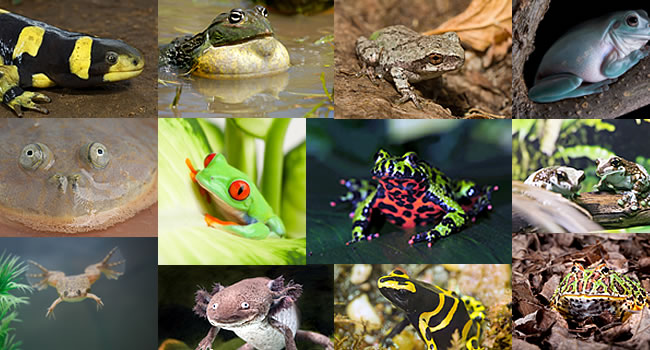
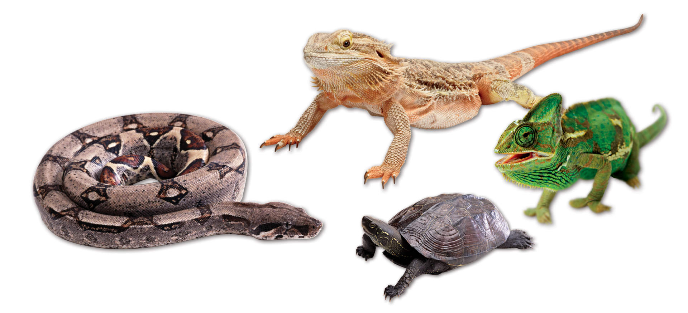

Slimy and Scaley
A Lot of Variety Reptiles and amphibians fall in the category of exotic pets, and as such, you'll need to check your local regulations to determine which ones are legal for you to keep as pets. As a general rule, it's probably legal to keep anything that's sold at one of the major pet store chains, but you'll need to be more careful if you're purchasing from a private dealer. There are many animals in this group to choose from, and some of the most popular choices include,Snakes ,Turtles,Tortoises ,Lizards ,Salamander ,Newts ,Frogs and Toads. Your first job is to study any of these animals that interest you to learn more about them. You'll find a number of articles on individual species in this category, and more info will be added as time goes on.
